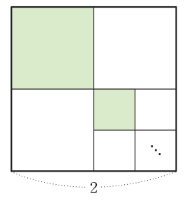

2026학년도 1학기 | 대수
수열 \(\{a_n\}\): 차례대로 나열된 수의 열, 제\(n\)항 \(a_n\)이 일반항. 첫째항부터 제\(n\)항까지의 합 \(S_n\)에 대하여 \(a_1=S_1\), \(a_n=\) \(S_n-S_{n-1}\ (n\ge2)\)
미래엔 교과서 139~141쪽 중단원 마무리 문제 전부 (기본 → 표준 → 발전 순)
(가)는 "\(a_5\)와 \(a_7\)의 부호가 다르다"는 뜻. 공차가 양수(증가)이므로 \(a_5\)가 음수, \(a_7\)이 양수이다. 그러면 \(a_5\)보다 앞의 \(a_2, a_4\)도 음수 → 절댓값을 모두 벗길 수 있다. (\(a_6\)의 부호는 몰라도 된다.)
\(S_n=-\dfrac52n^2+\dfrac{67}{2}n\)의 꼭짓점 \(n=6.7\)을 그대로 쓰면 안 된다. \(n\)은 자연수! 양수인 항까지만 더할 때 합이 최대이므로 \(a_n\)의 부호가 바뀌는 곳을 먼저 찾는다.

단원 전체를 엮는 수능형·서술형
📖 출처: 수능특강 수학Ⅰ · 등차·등비 · 유제 10
난이도 ★★★★ (학습지 max+1, 10분) · 핵심: log 등차 ↔ 진수 등비 + 곱의 로그 + 등비합 (단원 종합 융합 — 수능 28·30번급)
핵심: 등차·등비를 따로 다루는 것이 아니라 log를 매개로 두 개념이 호환됨을 활용. 본 단원의 종합 마무리에 어울리는 도전 — 수능 28·30번급 융합형.
스마트폰으로 우측 QR코드를 스캔하여, 아래 3가지 유형 중 하나 이상을 체크하고 통합 서술형으로 작성해 제출한다.